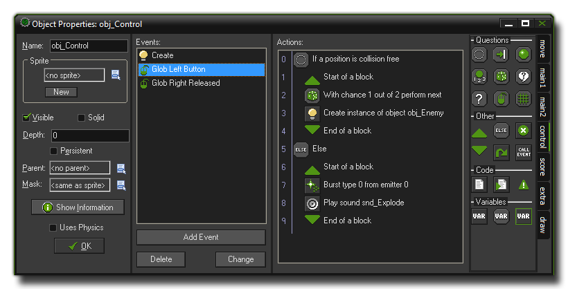
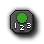
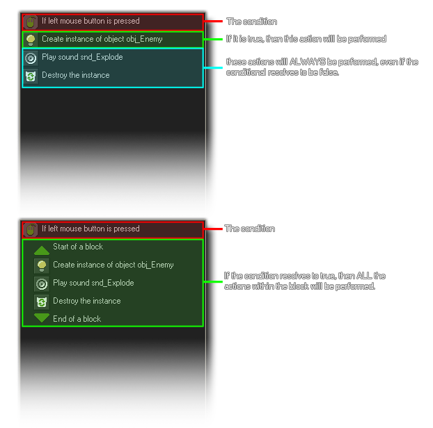
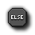
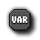

Control Actions
The control actions are actions which ask questions, add code or check conditions.
The third tab in your object properties action list is the "control" tab. This tab has all the main actions that are needed to control the more complex workings of your game like asking questions, checking conditions or adding
GML code. These actions are generally used in groups as outlined in the following image :

In the above example, the actions check to see if a position is collision free and if it returns true (there is no collision) then a "code block" is opened and in that we have another two actions. These two actions work together,
with the first one generating a random 1 in 2 chance of running the second action, which will create an instance of "obj_Enemy" and then the code block is closed. However, should the very first action that checks for a collision
return false (there is a collision), then the second code block is started after the "else", and this block bursts some particles and plays a sound. Note that the code blocks are indented as this gives a better overview
of the actions, in particular when you use blocks inside blocks for more and more complex programs.
Questions
the fallowing actions are dealing with conditional checks (ie: questions) which are normally to see if something exists, or if there is a collision, or if two values are the same as each other (or greater, or less). For all
conditionals there is a check box labeled NOT. If you check this, the result of the question is reversed so that if the result was true it becomes false and if it was false, it becomes true. If you look at the action
"Check Empty", you can have it without checking the "NOT" box, which means it is asking "if the place that I put the instance is empty", but if you have "NOT" checked then you are asking "if the place that I put the instance
is not empty". This allows you to perform certain actions when a question is not true, or not equal to or even not greater or not less than!
Another thing to watch when dealing with these conditionals is that you can indicate whether they should apply to all instances of a particular object or not. if you choose to apply them to all instances of an object, the result will
be true (or whatever) only if it is the same for all instances of that object. For example, you can check all instances of an object to see if the position slightly to the right is collision free.
Check Empty
This question returns true if the current instance, placed at the indicated position does not generate a collision with an object. You can specify the position as either absolute or relative and you can also indicate whether only
those instances flagged as solid should be taken into account or all instances. This action is typically used to check whether the instance can move to a particular position.
Note : This action requires that the instance doing the check has a mask index or a sprite with a valid collision mask assigned to it.
Check Collision
This is the opposite of the previous action. It returns true if there is a collision when the current instance is placed at the given position and, again, you can choose to check for only those instances flagged as being solid
or all instances.
Note : This action requires that the instance doing the check has a mask index or a sprite with a valid collision mask assigned to it.
Check Object
This question returns true if the instance placed at the indicate position meets an instance of the indicated object. These collisions will be precise if both instances have the mask index or sprite mask defined as being precise
otherwise they will be based on whether their bounding box overlaps or not.
Note : This action requires that both the instance doing the check and the instance being checked has a mask index or a sprite with a valid collision mask assigned to it.
Test Instance Count
For his action you specify an object and a number. If the current number of instances of the object is equal to the number the question returns true, otherwise it returns false. You can also change the check to test whether the
number of instances is greater than or less than the value you input. This type of check is typically used to check whether all instances of a particular type are gone, and so influence things like score, health or the game state.
Test Chance
This action takes the result of a "one in X" chance, where "X" is the number you input to test. For example, if you set the number to 20, then it's as if you have rolled a 20 sided dice and only if the side numbered
1 comes up will you get a "true" result, and the action will perform the next one below it. The larger the number of "sides" of the dice, the smaller the chance of 1 being true and the next action being carried out,
and the number being checked doesn't actually have to be an integer as you could check for a 1 in 2.5 chance, or a 1 in 35.75 chance etc... However, fractions of 1 will not work as you can't have a 1 in 0.5 chance
of something happening! This has many, many uses when making games as it can add a controlled, yet random chance of something happening, for example in each step you could have a bomb check to see if it
should explode, or an enemy check to see if it should change direction.
Check Question
Here you can specify a question for the player to answer either yes or no to, with the subsequent actions running (or block of actions) if the result is yes (true). The question is shown in an independent pop-up dialogue.
Test Expression
This is the most general question action whereby you can enter an arbitrary expression and evaluate it. If the expression evaluates to true (that is, a number larger or equal to 0.5) then the next action (or block of actions)
is performed. For more information on expressions see this section of the manual - Using Expressions and Variables in Actions.
Check Mouse
This action will return true if the indicated mouse button is pressed. For example, in the step event of an object you can check whether a mouse button is pressed and, if so, move the instance to that position (you would use
the jump to a point action with values mouse_x and mouse_y).
Check Grid
Returns true if the position of the instance lies on an imaginary grid, made up of spaces defined by you in action when you add values to the vertical and horizontal spacing parameters. A common use for this action is to do
a check and only let the player move if his character is aligned to the grid (think how a game like PacMan works).
Other
Start Block
This indicates the start of a block of actions. Using the start and end block markers you are able to group a series of actions together so that if a conditional results as true, then all the actions are performed and not just the one
directly below the question. the following image illustrates this :

End Block
Indicates the end of a block of actions. See the above image and "Start Block" action for more information.
Else
When you ask a question you may often wish to have a reply for if the answer is true or false, and so GameMaker:Studio provides you with the "else" action so you can re-create this with actions. Basically, you
have your conditional, then the block of actions if it is true, then "else", then the block of actions for if it is false. See the image at the top of the page for an example of how this looks.
Repeat
Another useful action is the "Repeat" action. With this action, all you do is specify the number of times you wish the next action (or block of actions) to repeat and it will be done without you having to copy and paste the actions yourself
many times over. This can be used for many things, for example spawning number of pickup objects, or adding a value many times onto another or any manner of things.
Exit Event
When this action is encountered no further actions in this event are executed.
Call Parent Event
This action is only useful when the object has a parent object as it calls the corresponding event in the parent object. When working with parents, any event that the parent object shares with the child object is over-ridden by the child,
so you can call this action to force the child object to run the parent objects event as well as any actions it has for the event.
Code
If you want more control over what is happening in the game you can use code as GameMaker:Studio has its own language called GML (The GameMaker Language). This can give far more flexibility than using the standard
DnD actions as it covers far more things , but code and actions are not mutually exclusive and can be mixed in events to get the behaviours you require.
Execute Code
When you add this action, a window will open showing the GM Script Editor where you can write the code that you wish the event to execute. This code can be for anything from a single simple function to a full blown AI, however it
is recommended that you use scripts (see Advanced Use : Scripts) for longer pieces of code as it makes structuring your game far easier.
Execute Script
With this action you can execute a script that you have previously added to the game resources, passing a maximum of five arguments to it. the script. For more information on scripts you can go to this section of the manual -
Advanced Use : Scripts.
Comment
Use this action to add a line of comment to the action list. A comment is usually a short sentence to remind you of what a particular set of actions is meant to do and a comment in itself does not actually affect the normal running of
GameMaker:Studio. However, even though it does nothing, it is still recognised as an action and can be (for example) placed in a collision event so that it will trigger that collision even when no code is present.
Variables
Variables are an essential part of game making. They are the base on which almost all a game is built as you need them to hold the values that govern the behaviour of your objects, for example, score, lives and health are all
internal variables that GameMaker:Studio creates for you (see Variables And Variable Scope). However,
in-built variables are certainly not enough to build your game around, and so you will need to use the following actions (or code) to set, test and change variables as your game progresses.
Set Variable
This action sets a variable to a value. If that variable does not exists then it creates it and gives it the specified value. This action can also change the many in-built variables that GameMaker:Studio has. To use it you
specify the name of the variable and the new value it should have. Bare in mind that when you check the Relative box, the value is added to the current value of the variable, but please note that this
can only be done if the variable has already been created and has had a value assigned to it!
Test Variable
With this action you can check what the value of a particular variable is. If the value of the variable is equal to the number you have provided then the question returns true, otherwise it returns false. You can also indicate that the
check should be whether the value is smaller than or greater than the value specified and you can even use this action also to compare two expressions or variables to see if they are the same as, greater than or equal to
each other.
Draw Variable
With this action you can draw the value of a variable at a particular position on the screen. Note that this can only be used in the draw event of an object.